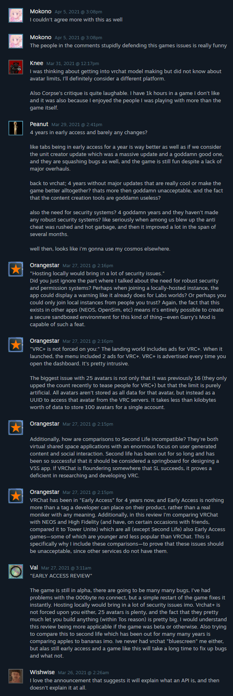
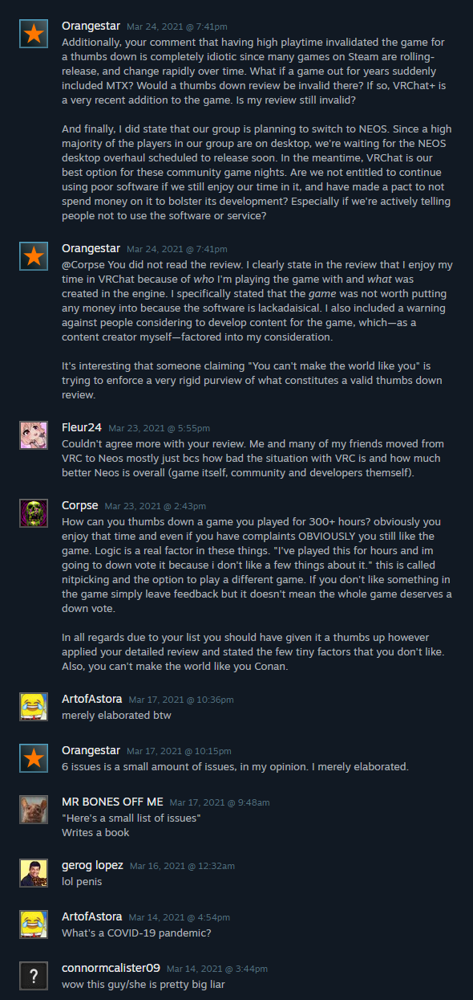
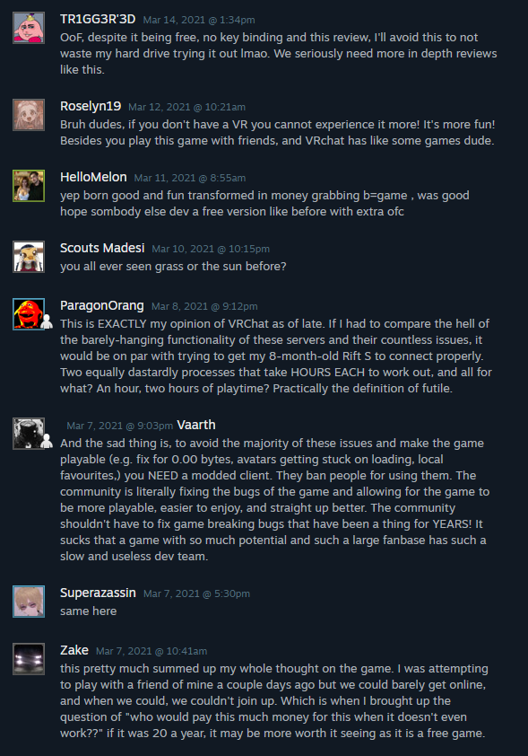

On March 5th, 2021, VRChat announced a blanket ban on users who created well-known modifications for VRChat. It was a horribly maligned concept and led to a massive negative backlash from the community at large, leading to a massive drop in Steam review scores. This was mostly spurned on by the fact that this was shortly after VRChat unveiled their monetization/subscription system: VRChat+, leading to the assumption that these mod creators were banned for adding features that were planned to be made as paid upgrades as a part of VRChat+.
The mass ban was bemoaned by almost everyone, and VRC+ has become a point of contention for many VRChat players. I was one of the people who included a negative review for VRChat during this time.
Yesterday (Monday, July 25th, 2022) VRChat announced the "Security Update". Currently in beta, this prospective update includes, as far as I can tell, no actual security features. The primary addition is Easy Anti-Cheat, an external library by Epic Games designed to prevent cheat software from maliciously interacting with the game.
So far, this update has already been severely maligned by the community, however, I believe the way the VRChat team has handled it is in a dangerous and altogether insecure manner. To help signal boost what a terrible idea this was, I am going to recreate my Steam Review, which will make it more "fresh" to Steam compared to my older (also negative) review. In order to keep the existing review archived, however, I have made this page.
The old review:
(The following text has been left unedited, save for preserving formatting.)
I'm a part of a relatively large server where a dedicated group of regulars have weekly get-togethers. This is especially fun during the COVID-19 pandemic due to the fact that we can't really have social interaction in person. We tend to use VRChat for our get-togethers due to the high volume of content and ways VR players can interact with the environment above all else. Unfortunately, the longer the game has existed, the more unstable and unfun the game has become to the point where I can't recommend it to anyone, and we're now looking for other outlets for our game nights. Here's a small list of issues.
- In lieu of a creator-focused monetization model (like the ones other virtual shared space apps have done, such as Second Life), VRChat has opted instead for a tiered subscription service, gatekeeping features like saving more than 25 avatars (a purely artificial limit) and user avatars behind a frankly ridiculously overpriced paywall. VRChat+ is more expensive than PSN+, Spotify Premium, Hulu, Disney+ and Nintendo Switch Online, and is the same price as Amazon Fricken Prime.
- Frequent server downtimes as of late. Even if I was paying for VRChat+, a service that demands a higher premium than Spotify's subscription service, I wouldn't be able to reap the benefits anyway. Unlike services like NEOS or the now-defunct High Fidelity, all content is stored on VRChat's servers, and I cannot host anything locally, making the game frustrating at random moments when servers stop sending things like friend status or world data. Our friends have coined the term "Zero-byte hell" for states where VRChat is stuck at a permanent downloading screen with no progress and "/0.00 bytes" on the status bar.
- Client and SDK instability. I'm not talking about things like poor performance on worlds or quest avatars being a burden to generate. That's all things you can rightfully blame the content creators for. I'm talking about instances where the client will reliably create bluescreens on my computer in the official VRChat home world mere minutes after booting the game. I'm talking about instances where the whole app decides to stop working with my FBT rig for seemingly no reason. I'm talking about instances where I will join a world friends are in from the Social menu and be put in a completely unrelated world instance, despite the UI telling me otherwise. I'm talking about an extremely clunky UI with no meaningful refreshes in literal years: the privacy options tab is STILL listed as "New!" and "In beta". The recently released "Udon" scripting system has a useless SDK where things like boolean comparisons will reset the values of boolean nodes inside the node system itself, making useless scripts in the process. It's very telling that the best way to use Udon is not with the official VRChat SDK, but with a user-made facsimile of C# using Udon's low-level assembly as a base. How many games have you played where the game is designed for you to browse other peoples creations like Mario Maker, Roblox, or LittleBigPlanet, only for the content creation tools to be USELESS?
- Vindictive approach to client modding. Sure, some mods can ruin the game for other players, and it would be nice if VRChat had a working, robust blocking and security system to prevent hackers, script kiddies and modders from spoiling other people's fun, but VRChat has a draconian no-nonsense approach to people modding their game. EVERY instance of a mod is considered bannable under VRChat's supervision. Quality of life mod that improves the FBT system with a better IK solver? Banned for modding. Utility mod that lets you spawn a LOCAL-ONLY flashlight for horrible dark worlds with no lights? Banned for modding. Used OVR Advanced Settings to do the infinite roomscale trick? Banned for modding even though you didn't modify the client at all.
- The above would EASILY be solved with in-game privacy tools, but votekicks sometimes just don't work, blocking doesn't prevent avatars from being downloaded (and doesn't prevent crashers from crashing!), and the lack of real avatar performance metrics makes a lot of content privacy settings fundamentally useless. Example: VRChat has an option to block rendering of avatars at a certain performance level. The performance levels available, however, are a completely unhelpful "Excellent, Good, Fair, Poor, Very Poor" scale, and the metrics for what is considered "Very Poor" is extremely tight and restrictive. Have a really nice avatar with 2 shaders and about 20k tris but put 3 audio players on it for 3 gestures? Whoops, Very Poor! Compare this to Second Life, which has a very robust filtering system that allows you to generate artifact avatars at a specific distance to you after a specific number are rendered, and allows you to filter avatars at a specific numerical polygon count that you specify.
- ZERO transparency from the developers for any of this. Developers do not address any issues whatsoever in any meaningful way. What's causing the server downtime? Issues. When will it be mitigated? No clue. Why are we getting client patches with no changelogs to solve what is supposedly a server issue? Crickets. Why did the unmentioned update get rolled back almost immediately? Why doesn't the Udon SDK work, and why do people have to use Udon Sharp? You showcase worlds made with Udon Sharp, do you approve of it? Why don't you guys comment on any feature requests? Why does your main focus right now seem to be not on anything related to working on the client, and instead seems to be on marketing VRC+? Why are features still in beta after years? Why are KNOWN bugs left to languish for years? Quite frankly, it's disgusting that these developers think they can nickle and dime us, and not actually give anything meaningful in return. Because I need to make a comparison or someone will tell me I'm not giving the developers a fair shake, this game has had these issues for YEARS with no monetization plan besides enterprise funding and there's been no headway. Meanwhile, NEOS, which is relatively much newer by comparison, has been doing massive reworks of things like UI, performance, and Desktop player experience to improve their service under both a Patreon crowdfunding campaign and an in-game currency system for rewarding creators.
I still enjoy this game. I will still play this game. I will join in if people ask me to talk to them in this game. I enjoy seeing what people make for this game. Despite all of this, I must beg and plead with you and EVERYONE I talk to. Do not give this game any of your money. Do not pay for their subscriptions. Do not even do it for a laugh. You will regret it. Don't learn to create content or games for the service. The skills you learn will be so niche so as to be nearly useless and the whole thing works like a vampire. There is no content in this game if not for the creators, and it barely treats anyone with enough respect to make it worth learning, let alone does it the creators with respect.
Edit March 11, 2021:
I feel it is required for me to add an explanation for VRChat's recent notifications that they've been sending out.
Today, they've sent out this announcement. It's huge, and does in fact include one helpful piece of information: that the company is launching a status page to tell when servers are having issues. However, despite just how much text has been put into this announcement, it still doesn't specify what's causing the issues. This announcement is indicative of just how much VRChat works to try to placate people rather than working. They say nothing, and pretend they said everything.
{kind=link}
Edit March 27, 2021:
I made a consolidated list of responses that I've been making to comments on this review.
That consolidated list:
Since I'm sunsetting my Neocities account someday, I'm copying that "consolidated list of responses" here.
(The following text has been left unedited, save for preserving formatting.)
Additional Responses to my VRChat Steam Review
I left a negative review on VRChat on Steam. Since then, people have left comments defending the application against my review, and I've been making responses in the comments section as well. In an effort to prevent repeat comments, I've compiled my responses here to bolster my review.
Why is your review so long if you claim it's only a "small list" of issues?
I only listed 6 issues, and 6 is a small number of issues in my opinion.
You shouldn't give this game a poor review, because you have 300+ hours.
I clearly state in the review that I enjoy my time in VRChat because of who I'm playing the game with and what was created in the engine. I specifically stated that the game was not worth putting any money into because the software is lackadaisical. I also included a warning against people considering to develop content for the game, which—as a content creator myself—factored into my consideration.
Many games on Steam are rolling-release, and change rapidly over time. What if a game out for years suddenly included MTX? Would a thumbs down review be invalid there? If so, VRChat+ is a very recent addition to the game. Is my review still invalid?
And finally, I did state that our group is planning to switch to NEOS. Since a high majority of the players in our group are on desktop, we're waiting for the NEOS desktop overhaul scheduled to release soon. In the meantime, VRChat is our best option for these community game nights. Are we not entitled to continue using poor software if we still enjoy our time in it, and have made a pact to not spend money on it to bolster its development? Especially if we're actively telling people not to use the software or service?
Your review shouldn't count because the game is in Early Access. Obviously, Early Access games are going to be buggy.
VRChat has been in "Early Access" for 4 years now, and Early Access is nothing more than a tag a developer can place on their product, rather than a real moniker with any meaning. Additionally, in this review I'm comparing VRChat with NEOS and High Fidelity (and have, on certain occasions with friends, compared it to Tower Unite) which are all (except Second Life) also Early Access games—some of which are younger and less popular than VRChat. This is specifically why I include these comparisons—to prove that these issues should be unacceptable, since other services do not have them.
You can't compare VRChat to Second Life—they're too different.
How are comparisons to Second Life incompatible? They're both virtual shared space applications with an enormous focus on user generated content and social interaction. Second life has been out for so long and has been so successful that it should be considered a springboard for designing a VSS app. If VRChat is floundering somewhere that SL succeeds, it proves a deficient in researching and developing VRC.
25 avatars is plenty of slots for a regular user.
The biggest issue with 25 avatars is not only that it was previously 16 (they only upped the count recently to tease people for VRC+) but that the limit is purely artificial. All avatars aren't stored as all data for that avatar, but instead as a UUID to access that avatar from the VRC servers. It takes less than kilobytes worth of data to store 100 avatars for a single account.
VRC+ is not forced on you. It's not worth it to complain about an optional paid feature.
The landing world includes ads for VRC+. When the service launched, the menu included 2 ads for VRC+. VRC+ is advertised every time you open the dashboard. It's pretty intrusive.
Allowing locally hosted instances could introduce security issues.
Once again, this could be solved easily with robust permissions and security settings. The VRC devs just don't seem to be willing to try for one reason or another. Perhaps when joining a locally-hosted instance, the app could display a warning like it already does for Labs worlds? Or perhaps you could only join local instances from people you trust? Again, the fact that this exists in other apps (NEOS, OpenSim, etc) means it's entirely possible to create a secure sandboxed environment for this kind of thing—even Garry's Mod is capable of such a feat.
What do you have to say about the VRChat Dev stream they had after this bad press started?
I'll believe it when I see it.
An archive of comments.
I'm sure someone is going to claim that I reposted my review to "silence critics" in my previous review. As a result, here are full, unedited screenshots of the entire comments thread on that review. Be aware that, as is common for Steam comment threads, these comments are in reverse-chronological order.
Page 3:

Page 2:

Page 1:
